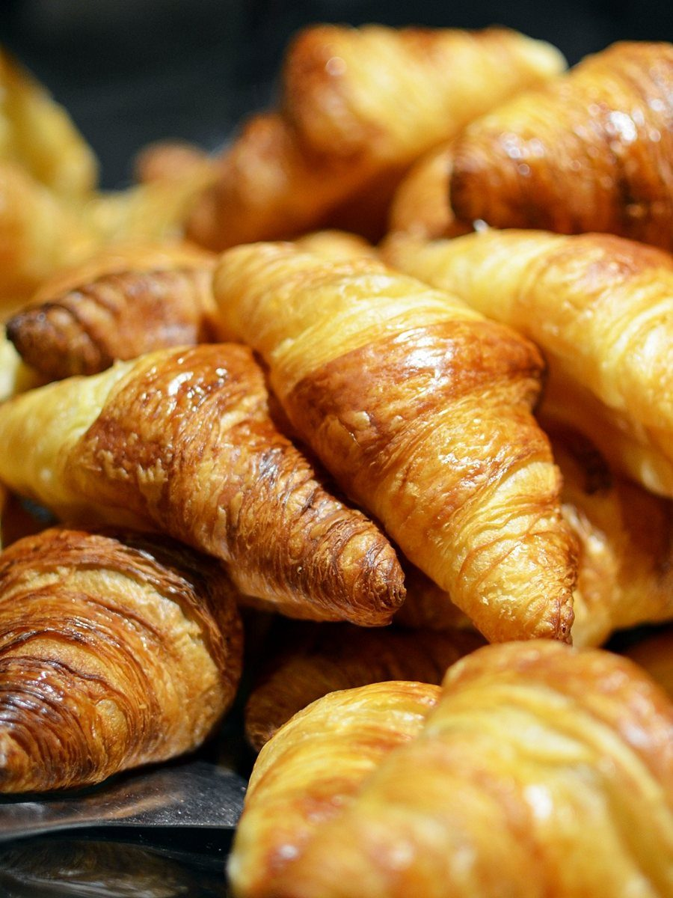

a BakeryOlive
青森県三沢市にあるパン屋「a Bakery Olive」のご案内ページです。営業時間やメニューなど詳しいことは準備中。まずはInstagramをのぞいてみてください。


制作側の連想
屋号の「Olive」から、実の色づきを借りました
店名の由来は分かりません。制作側は「Olive」という言葉から、オリーブの実が青い緑から紫を経て黒へ色づいていく姿を連想し、このページの配色に借りました。パンの種類やお店の理念とは関係のない、制作側の連想です。
GREEN青い実
色づく前の、ひきしまった緑。
写真は色味で選んだ国外・撮影地不明の麦とパンのイメージです。


VIOLET紫の実
緑から紫へ、色が移りはじめる途中。
夕暮れ色や粉をまとった色味の写真を並べました。


BLACK黒い実
いちばん濃く色づいた黒。
焼き色の濃いパンや暗がりの色味で集めました。



ご案内
お店のこと(確認できたものだけ)
| 所在地 | 〒033-0143 青森県三沢市前平3丁目5-13 |
|---|---|
| 電話 | 090-2887-5655 |
| 営業時間 | 準備中 |
| 定休日 | 準備中 |
| ご予約 | 準備中 |
| 駐車場 | 準備中 |
| SNS | Instagram @a_bakery_olive |